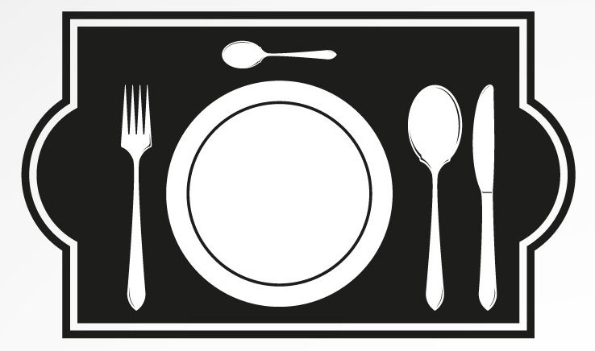

Home
Recipes
Aves
Bolos
Carnes
Lanches
Massas
Peixes
Saladas
Sobremesas
Sopas
Tuna pasta sauce with linguine
Tuna pasta sauce with linguine
Tuna pasta sauce with linguine
Tuna pasta sauce with linguine
Tuna pasta sauce with linguine